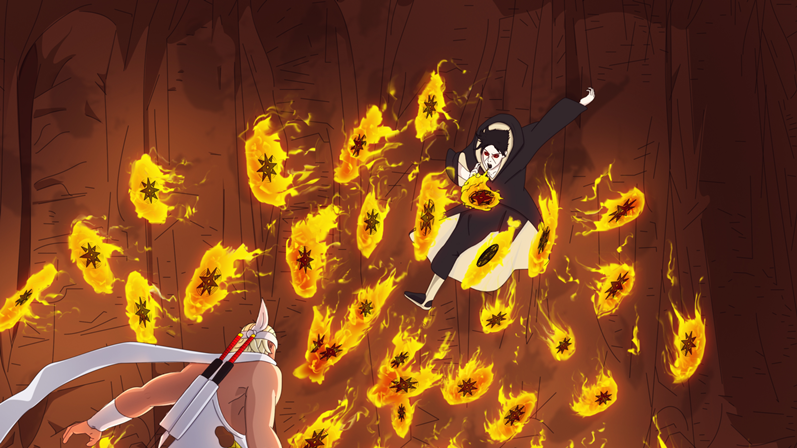
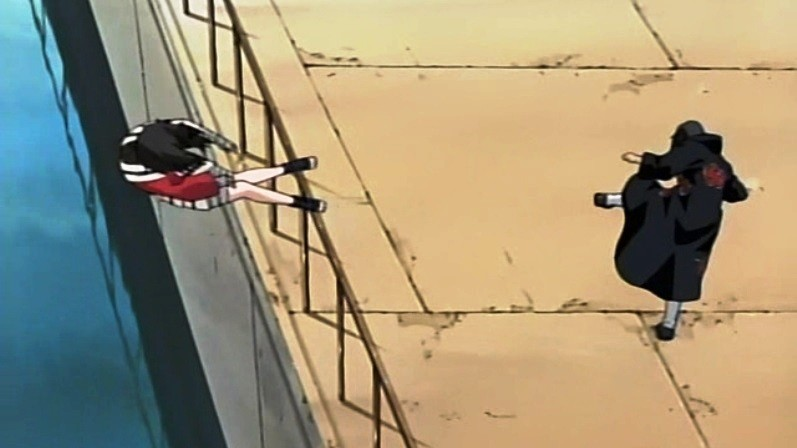
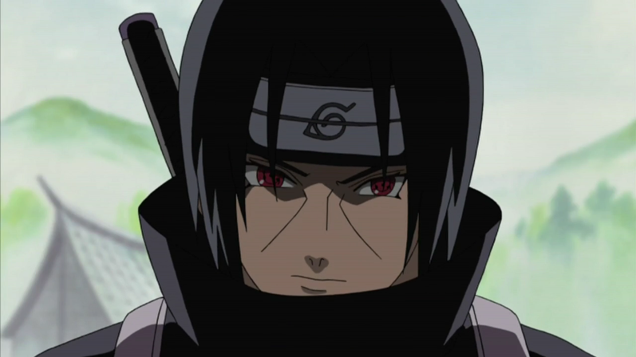
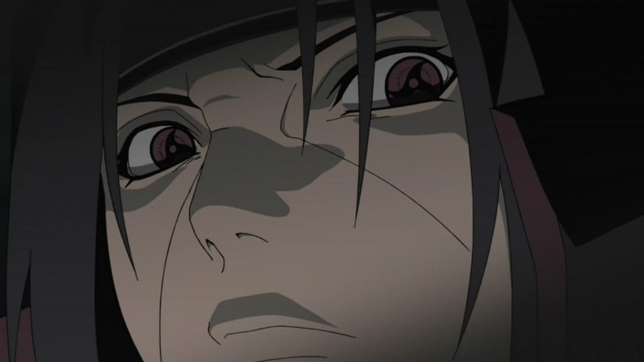
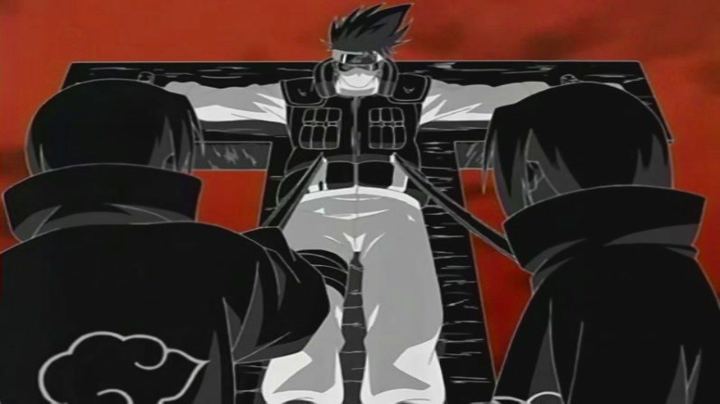
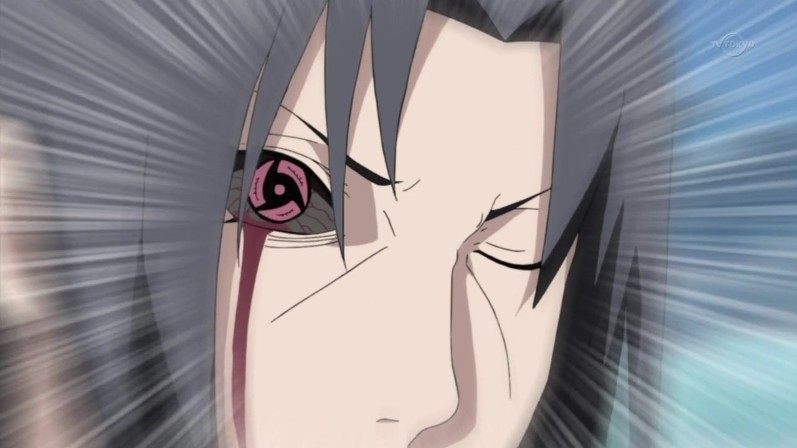
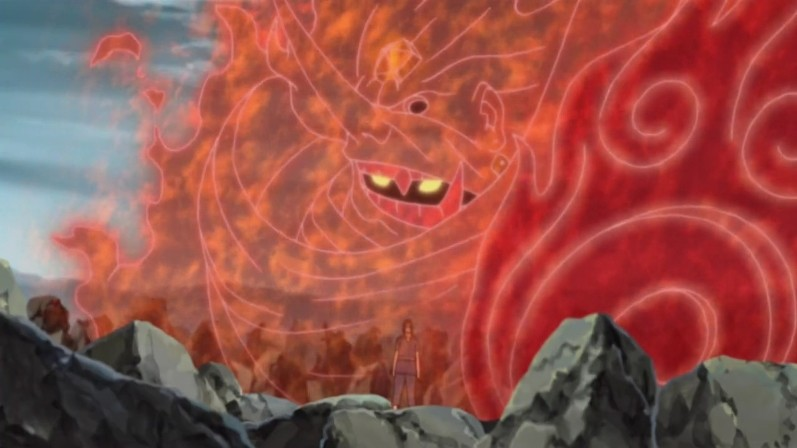

|
|
|
|
> Yetenekleri
1- Ninjutsu
İtachi, Uchiha Klanı'na ait tüm jutsularda en üst seviyesindedir.
Ayrıca Sharingan'ı sayesinde üç ana elementin tüm jutsularını
kullanabilir. Itachi, Kakashi, Kurenai ve Asuma ile karşı
karşıya geldiği zaman, Kakashi, onun daha gücünün yarısını bile
kullanmadığını söylemiştir. Itachi, ninjutsu ve genjutsu
tekniklerinde sıklıkla kargaları kullanır. Klonunu kargalar ile
yaparken, shurikenini kargaların içine saklayarak fırlatır.
Itachi daha çok Uchiha Klanı'nın geleneksel Ateş Teknikleri'ni
kullanır. Su Teknikleri'de kullanabildiği görülmüştür.

2- TAIJUTSU
Itachi, taijutsuda en üst bir seviyede olmasa da, bu stilde çok üst
düzeylere ulaşmıştır. Chūnin Sınavları'nda Chidori'si ile artislik
yapan Sasuke'nin bu saldırısını tek hamlede durdurmuştur. Ayrıca
Itachi, shuriken ve kunai fırlatmada çok iyidir ve en üst seviyede
kılıç kullanmaktadır. Itachi'nin el hareketleri inanılmaz derecede
hızlıdır. El mührü yapışı neredeyse belli bile olmaz. Silahını
çekerken, ninjutsuyu çoktan uygulamaya geçirebilir. Yakın mesafede
çok hızlı hareket edebilir. Öyle ki bu ışınlanıyormuş gibi bir izlenim
uyandırır. Sharingan kullanım hızı, el mühürleri yapışı açısından,
Sasuke ve Kakashi, Itachi'yi geçememişlerdir.

3- Sharingan
Kakashi'nin belirttiği gibi her Uchiha'da bulunan Sharingan, Itachi'nin
daha sekiz yaşındayken tam kapasite kullanabildiği bir kekkei genkaidir.
Itachi genelde sabit bir pozisyonda durup rakibini izler. Tabi bu arada
karşısındakini çoktan genjutsuya almış olur. Itachi'nin sadece rakibine
bakarak onu genjutsuya alabilmesi, korkulacak bir özelliğidir. Itachi'nin
kendisininde dediğine göre rakibini genjutsuya alma şekli sadece gözüyle
değil tek parmağıyla bile genjutsuya yakalayabilir. Eğer Itachi bunu
yapamadan karşısındaki rakibi onu genjutsuya alırsa, Demonic Illusion:
Mirror Heaven and Earth Change tekniğini kullanarak, aynı genjutsuyu
rakibine yansıdır. Ao'ya göre, Itachi uzak mesafelerden bile rakibini
genjutsuya alabilmektedir. Itachi'nin yaptığı genjutsuların çoğu
Sharingan tabanlı olsa da, tüm tekniklerinde rakibini psikolojik
olarak çökertir. Ben ve daha birçok takipçiye göre Itachi, seride en
iyi genjutsu kullanabilen kişidir.

4- Mangekyou Sharingan
Itachi, ayrıca Mangekyou Sharingan'a sahiptir. Bunun anlamı Itachi'nin
çok çok daha güçlü teknikler kullanabileceğidir.

A- Tsukuyomi
Sol gözü ile Tsukuyomi kullanır. Bu teknikle rakibine psikolojik
işkence yapar.Teknikte kişi bir saniyede günlerce işkence görmüş
gibi olur.

B- Amaterasu
Sağ gözü ile de Amaterasu olarak nitelendirilen bir ninjutsu kullanır.
Amaterasu, siyah bir ateştir ve ateşin kendisini bile yakabilir. Bu
siyah ateşin özelliği rakibi saf dışı kalsa bile uzun süre sönmemesidir.

C- Susanoo
Son tekniğin adı ise Susanoo'dur. Itachi bu tekniği iki gözüyle birlikte
kullanır.Teknikte ortaya hayali bir varlık çıkar. Susanoo'da ortaya çıkan
varlığın bir elinde deldiği herşeyi mühürleyebilen Totsuka Kılıcı, diğer
elinde ise gelen tüm atakları geri sektiren Yata Aynası vardır.

|